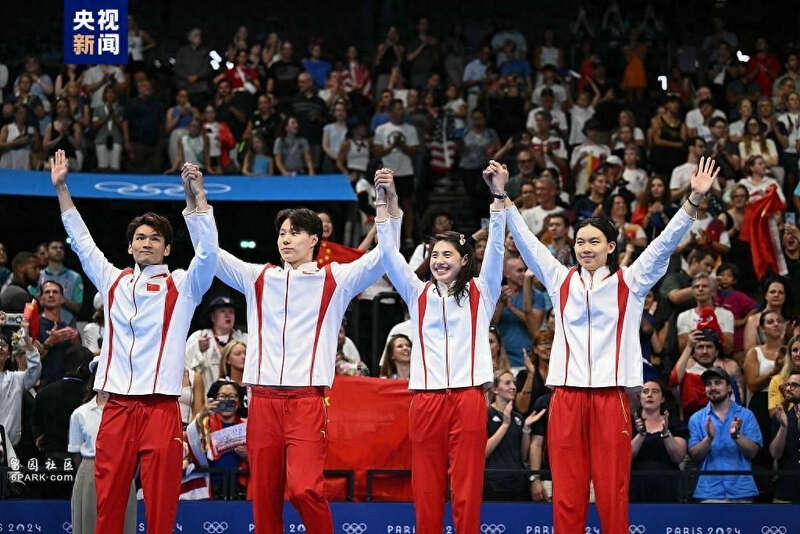
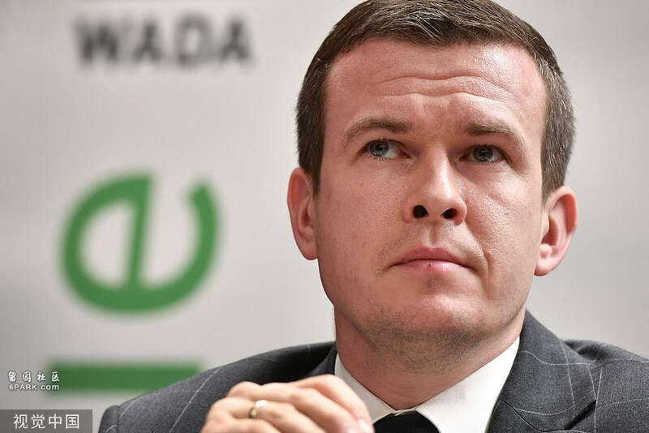

至少从三个维度来说，今年的奥运会注定非常的独特。
首先，这是第一次在中美战略竞争的背景下举办的奥运会。从差不多2017年开始，中美战略竞争的局面开始形成，到特朗普执政后期的“加速”，接下来是2021年拜登政府上台后，用大概2到3年的时间让大家彻底放弃幻想，认为中美关系已经正式进入到一种战略竞争的状态。在这个大的竞争背景下，巴黎奥运会是大型体育赛事举办的第一遭。
对于中国人来说，可能需要做好思想准备，即类似本届奥运会上出现的部分问题和现象，可能会成为未来历届奥运会的一种常态：第一，大家会感觉到奥运会越来越成为某种象征性的场合，各种各样的观念在这里激烈竞争。
第二，不用怀疑，从现在开始，未来10年、20年之内，只要中国队和美国队在奥运会上的特定类型的赛场中相遇，比如这次的游泳、田径项目，未来如果条件成熟还会包括一些球类比赛，只要赛场不是在中国或者东亚地区，尤其是在西方国家举办，那么中国运动员在与美国运动员甚至是西方国家运动员的交锋中，你会感知到竞技体育就是大国战略竞争的缩影：分秒必争、寸土必争，每一块奖牌都要抢，每一个成绩都要争。
这个趋势不以人的主观意志为转移，不管我们怎样想，欧美国家有自己的一套思路。他们就是把奥运会看成是一场没有硝烟的战争，大家以后可以去感知，这次的巴黎奥运会只是一个开始。
第三点在于，中国运动员在本届奥运会赛场上取得的成绩，中国代表队在各场比赛中展现出来的优势，就是中国整体性高速崛起的一个缩影——你的实力是一切的核心和基础。

2024巴黎奥运会，中国游泳队以2金3银7铜收官，奖牌数历史最佳，获奖人数达历史之最。 央视新闻
第二个维度是，中国运动员在竞争过程中遭遇的各种外部环境，就是今天中国遭遇的各种外部环境的一个缩影。对中国游泳队的系统性打压，相当于复刻了对华为的打压思路。
美国要在商业、产业领域打掉中国的领军企业；而在竞技体育当中，就是要打压中国崛起的项目，压制中国标志性的运动员，抹黑“挑头”的运动员，压制“挑头”的项目，然后在实体利益层面不让你进入。
在他们看来，中国拿了男子100米自由泳金牌、女单网球金牌还有男子4X100米混合接力冠军，开什么玩笑？这些都是美国连续几十年垄断的优势项目，是西方国家人种优势、系统性科技优势、体育能力优势、国力优势的缩影。结果他们的金牌“啪”地一下没了。这就相当于美国商务部长雷蒙多访华时，华为发布新手机、请对方代言的效果，性质是一样的。
而美国人的反应呢？当华为发布Mate 60后，雷蒙多有没有承认对华为的围堵失败了？没有，她说的是，美国还“堵”得不够严，要继续围堵华为，直到彻底卡死为止。
中国的游泳运动员在重重围堵之下，在被高度工具化与武器化的兴奋剂检查机制的干扰下，依然取得了这些好成绩，包括美国的“紫皮”游泳队员们，你以为他们会认可中国运动员吗？你想多了。他们认为还没有抓到中国的“漏洞”，对中国运动员的干扰还不够强烈，他们一定要达到目的才肯罢休。这就是中国运动员要在竞技赛场上面对的。
所以第三个维度的特点是什么呢？这是一场系统性的博弈，对方无所不用其极，赛场内外的、跟体育技术相关或者无关的，舆论上、认知层面甚至是国家情报机关都会下场，通过各种各样的方式进行全方位的渗透、影响、控制、打压直到摧毁，不达目的誓不罢休。
在此过程中我们发现了什么？这就像中国历史上的抗日战争，它是一场“人民总体战”，必须有效地动员群众、发动群众、组织群众，发挥中国人民的聪明才智，这是至关重要的。
我们需要用一切正确的、恰当的方式在赛场上为中国运动员加油鼓劲，同时在各个场合去指出对手的阴谋，转变成舆论。
大家不要怀疑，今天我作为一名普通的中国人在世界上能做多少贡献。虽然我们不会像西方国家那样，走到哪里都自视为“罗马公民”，带着傲慢和自以为是，但今天中国人在世界上的讲话是有分量的。我们有市场、有实力、有尊严，我们讲出来的话就代表了正义的声音。
比如，奥运东道主法国的游泳运动员马尔尚很傲慢，中国教练主动跟他握手，他装没看见。我们这边在舆论上表达了不满，这种声音进入到传统媒体。你法国选手有本事就不要道歉，干嘛回来道歉，为什么后面要解释？你以后还想不想来中国参与商业合作，你代言的产品还想不想进入中国市场？如果还想，那就老老实实过来合作，不要表现得太嚣张。大家都要讲游戏规则。
接下来是郑钦文赢得奥运会女单网球冠军，赛前没人敢想象这个结果，真的就拿下了。这意味着什么？巨大的进步，国际女子网球协会也非常振奋，为什么？这就是中国的实力。然后我们看到网民去构建认知，运动员和网民之间形成良性的互动与支撑，表达朴素的家国情怀和对国家的热爱。这种精神是有力量的。
当然，这次奥运会期间也会有一些令人出乎意料，甚至表现形式令人啼笑皆非、哭笑不得的事件，比如“连夜删微博”。但其背后反映出来的部分问题倒是值得更加系统性的思考。
我们发现什么？要相信人民，依靠人民，各种各样的信息碎片汇集到一起，大家发现，你真的要让他自己在体制内暴露出来，还不一定容易。但是他选择了“自爆”，通过删微博，最后注销微博账号，搞成了一个大型直播现场，让大家体会四字成语“欲盖弥彰”的含义。这说明当事人对于什么是新媒体，中国网民在社交媒体上的战斗力一无所知。或者说，就算他知道，也表现出了一种居高临下的傲慢和嗤之以鼻。
但这事情很重要的一点体现在，中国运动员遭遇了外部的不公平对待，中国的正当国家利益（中国运动员的权益是其中一个至关重要的组成部分）遭受损害后，是人民走在了前列，提出了自己的问题，然后敏锐地在互动中发现了这些问题。
这种互动的过程经典地展示出，在中国改革开放的进程当中，动力来自于哪里？这种动力很多时候来自于压力，从表现形式上来看，可能是一些偶发事件。比如这届巴黎奥运会，对中国运动员兴奋剂检测的武器化做法，达到了大家所能忍受的极限。

世界反兴奋剂机构（WADA）主席班卡批评美国反兴奋剂机构（USADA）的指控是基于“政治动机和反华偏见” 视觉中国
这次事件在网络上的传播，引发了网民群体的情绪共鸣。加上目前处在大国战略竞争的背景中，它提前用4到8年的时间帮助（大多数愿意顺应环境去调整认知的）中国民众树立了正确的认识，包括理解中国与世界关系这类的观念与认知。
而在满足了这几方面的条件之后，这次事件通过偶然的碰撞引起共鸣，朝着一个人们意想不到的方向去发展。现在基本上可以说是花开两枝，一方面，它会推动一轮内部的能力建设，一些暴露出来的相关问题，必然会进入到相应的解决机制轨道之内，这是可以肯定的。
另一方面，我们经常讲世界面临百年未有之大变局，中国进入到国际舞台的中央，奥运会就是国际舞台的中央，是国际竞技体育舞台中最大、最核心、最关键的一席位置。我们如何在这个地方塑造一个对中国有利的国际环境，如何通过塑造一种机制，能让中国代表新兴市场国家、全球南方去推动既有的国际机制朝良性的方向去变革。
中国网民非常的睿智，在这个事件中看问题非常清晰，尽管他们可能并没有长期从事兴奋剂检测相关问题的研究，对一些技术性细节和程序并不在行。但是，他们对这个问题有非常朴素本能且准确的把握。
我们不是说要滥用兴奋剂，我们知道兴奋剂是不好的，我们希望能够有一种更加公平的环境，把包括兴奋剂在内，各种上不了台面的干扰和影响，对那些认真训练与付出的运动员不公平的东西，从这个舞台上驱逐出去。还大家一片蓝天，而不是说为中国运动员独创一片蓝天。
我们主张是要为全人类，天下为公，这是中国人独有的一种情结跟情怀，这跟欧美国家强调自我中心的个体主义是不一样的。
对于今天的中国来说，借用之前许多人想用的词，巴黎奥运会能够有望成为一次“启蒙”，帮助我们睁开眼睛，真实地理解当今的世界，更好地去认识和理解中国的运动员。
中国的普通网民在网络上发的内容，他们所关注的信息在聚合与整合，且朝着正确的方向前进。什么是正确的方向？代表中国国家利益的方向。当大家一起朝这个方向前行的时候，能够发挥出多大的力量？这次奥运会提供了一个很不错的案例。
当然，我们未来依然是任重道远，但是可以看到曙光，我们看到了新一代人的成长，新一代网民的成长，他们可以跳出窠臼，敏锐地超越那种被规训的、经典的错误认知思潮与框架，发现其中的问题，理直气壮地去捍卫中国的国家利益。
我们看到了赛场上的中国运动员，敢打、敢拼、能打、能拼，有头脑、有智慧、有体力、有技巧，场上打得漂亮，胜利赢得漂亮，接受采访的时候讲得干脆、到位、清晰、简洁、直白明了。
我们不用理会网上的一些媒体在那里阴阳怪气，没有必要。这种拉踩只是体现了那份报道的写作者非常地有失水准，同时也提出了改革和变革的方向。目标是非常清晰的，要求是非常清晰的，场景也是非常清晰的，如果没有胜任的人，那就换人，这就是迭代—演进—轮替。
这是一个相当不错的方向，即每一个人前行的方向是什么？他热爱这个国家，他的利益认知和对国家的利益认知相一致，而这个方向又和人类前行的方向，真正意义上的国际社会所追求的正义主张保持一致，也就站在了人类历史正确的一边。
这就是当今中国可以把握住的机会，这次奥运会仅仅是一个起点，一个开始，未来我们可以看到更多的类似场景，也完全有理由对此保持乐观。